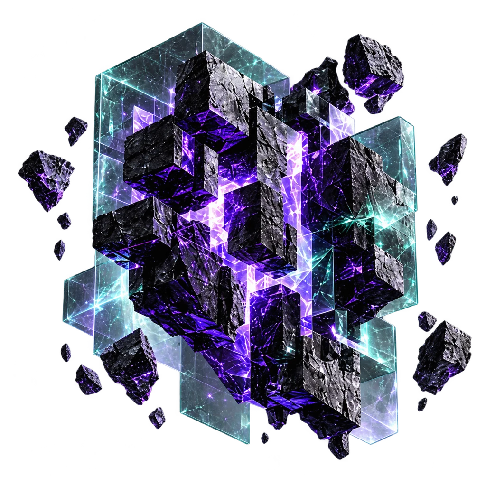
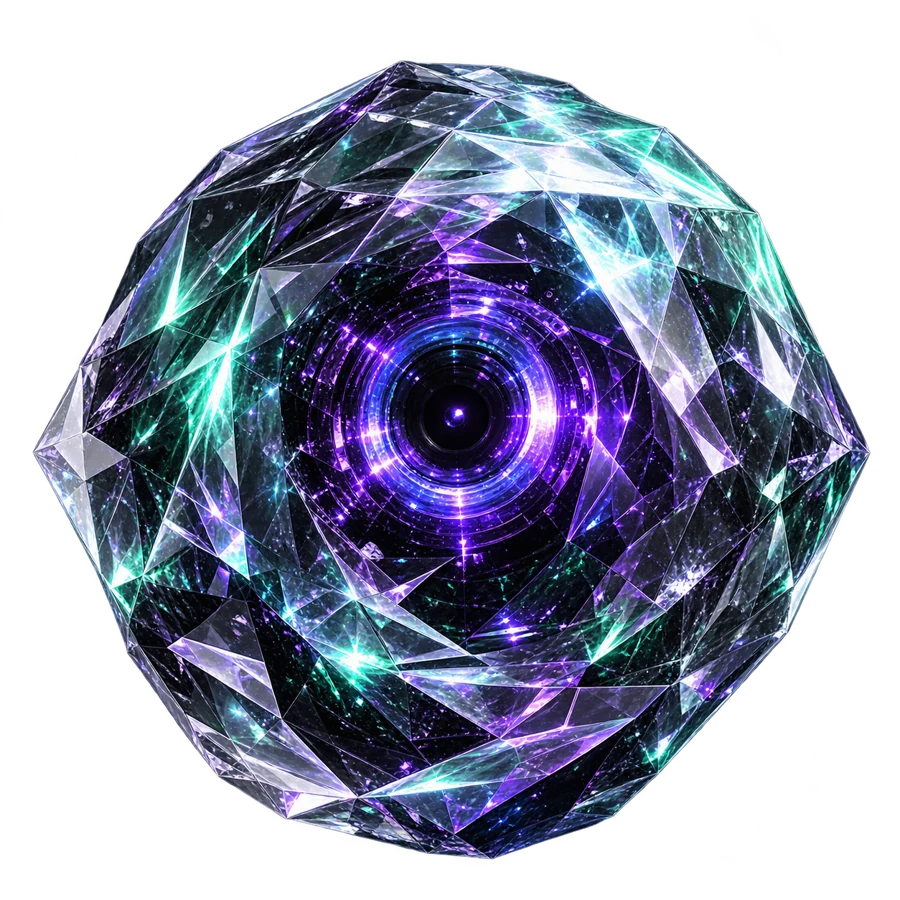

eJPT
eJPT
Junior Penetration Tester
INE Security

Offensive Security Engineer
Breaking things. Securing what matters.
Research-driven offensive security with real-world impact.
OFFENSIVE
SECURITY
RESEARCH
DRIVEN
ENGINEERING
FOCUSED
// FEATURED PROJECT
Passive network monitoring, ML-powered anomaly detection and threat-intelligence enrichment — a research-oriented platform focused on understanding threats before they spread.

TURN// CERTIFICATIONS & ACHIEVEMENTS
Continuous learning. Real-world impact.
Junior Penetration Tester
INE Security
Huawei Certified
ICT Associate
Assiut National University
2026 · Very Good
4th nationwide · Digitopia
Best Team Leader · DEPI
Testing is only the beginning. Understand why systems break, document the actual risk, and help teams build stronger defenses.
Web, mobile and network security assessments, vulnerability analysis, secure code review and remediation reporting.
BURP SUITE · NMAP · WIRESHARK · LINUXApplied machine learning for network threat detection, traffic analytics, benchmark evaluation and threat intelligence.
PYTHON · SCAPY · LIGHTGBM · ISOLATION FORESTCybersecurity instruction at Udacity, Python instruction at Almentor, and community technical sessions.
UDACITY · ALMENTOR · GDSC// EYEGUARD / TECHNICAL DEEP-DIVE
Explore four stages of the EyeGuard research pipeline. The UI is an interactive illustration; it is not a live SOC deployment.
Passive traffic capture with Scapy / PyShark, network flow reconstruction and feature extraction to turn raw packets into useful security telemetry.
// SELECTED EXPERIENCE
Web, mobile and network assessments, secure code review and remediation reporting under senior supervision.
Cybersecurity instruction, hands-on practice, mentoring and technical feedback.
Python programming, debugging and practical problem solving.
// PROFESSIONAL DOSSIER
Three focused versions of my CV, tailored to different opportunities.
Penetration testing, application security and security engineering.
Applied security research, AI / ML detection and graduate programs.
Teaching assistantships, lab instruction and university applications.
// OPEN A NEW CHANNEL
Available for offensive security opportunities, applied research and technically demanding collaborations.